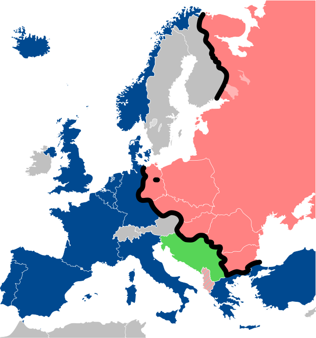

Welcome to this Webpage!
Transformation Theory, The transformation of Germany, developments upfront the revolution in the GDR and the revolution itself.
We are two students who worked on this Website explain to you how Germany became what it is today and how the transformation after World War II was essential to this development.
You can navigate through this website by using the top row to read about focal points. Occasionally you can find links redirecting to related contents or other websites you should check out.
If you are interested in learning a little about how this page was made look here.
 Von © Sémhur / Wikimedia Commons, CC BY-SA 4.0, Link